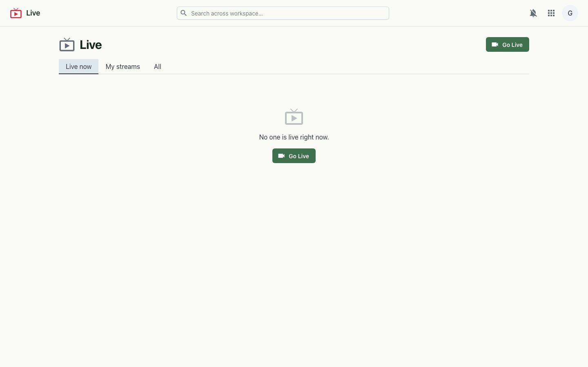

Self-hosted live streaming — broadcast from your browser or pro software, and let your team (or the public) watch in their browser.
Live turns your workspace into its own streaming channel. Create a stream and go live straight from the browser — sharing your webcam or your screen — or feed it from OBS and other broadcast software over RTMP. Viewers watch on a clean page over HLS, or over low-latency WebRTC. Streams can be visible to your organisation only or made public for anyone to watch.

Live uses a self-hosted MediaMTX media server as its ingest/egress core, proxied under the workspace origin. Browser broadcasts publish over WHIP (WebRTC); OBS publishes over RTMP with a per-stream key. The same path is served back out as HLS for broad-compatibility playback and as WHEP (WebRTC) for low-latency viewing. Stream metadata and visibility live in the platform database.